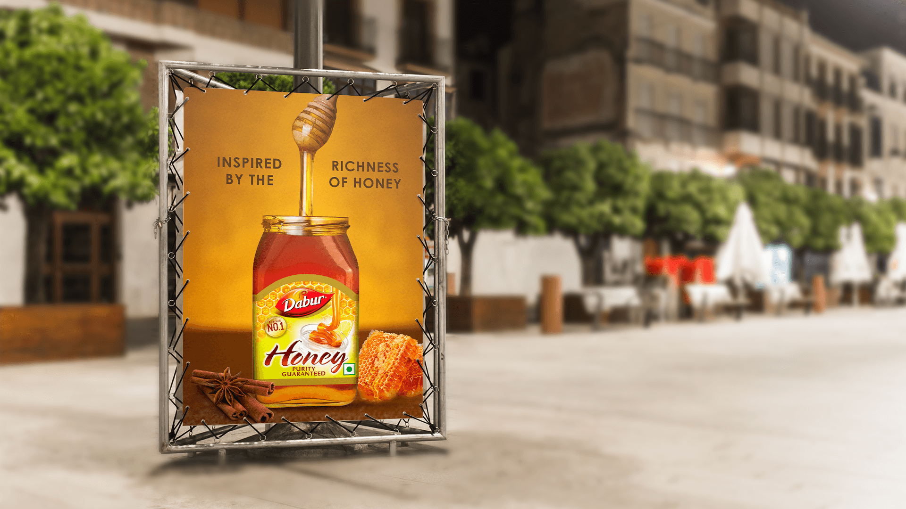
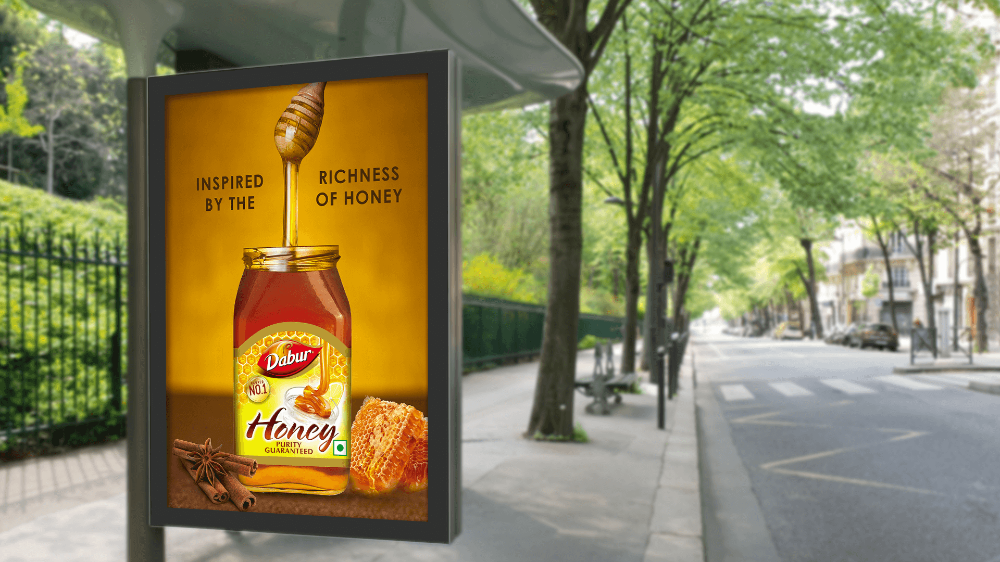

The product needed to communicate confidence and clarity in a category where purity strongly shapes choice.
← Back to workRichness, in motion.
Dabur Honey · Clip-on Print
Richness, in motion.
Purity, in focus.

Project overview
A familiar product.
An irresistible texture.
Dabur Honey is positioned around purity and the role of honey as part of an everyday routine.
The clip-on campaign gives that promise a physical expression. One continuous stream connects the honey dipper to the jar, making richness, viscosity and product authenticity visible before the supporting words are read.
- Product
- Honey
- Core message
- Richness
- Expression
- Pure + Sensory
- Application
- Outdoor Print
The communication challenge
Make purity credible.
Make richness desirable.
The outdoor execution also had to convey the dense pour, warm colour and satisfying texture of real honey.
The creative device
One uninterrupted pour.
One immediate truth.
The dipper extends above the conventional pack shot and a single honey stream leads the eye directly into the open jar.
The honeycomb and warm surface details reinforce source and texture, while the uncluttered composition keeps the product unmistakable.
The fast-read system
Source. Texture.
Pack.
- 01
The dipper
A universally understood honey cue establishes the category instantly.
- 02
The stream
The long golden pour turns richness into the composition’s central gesture.
- 03
The jar
The recognisable pack closes the story with a clear product signature.
The work in context
One golden line.
Two outdoor settings.
Each supplied application appears once and remains uncropped, preserving the full dipper, honey stream, jar and environmental context.


The outcome
A product truth.
Stretched into an icon.
The clip-on execution compresses the complete story into one vertical sequence: dipper, pour, pack and honeycomb—clear enough for the street and rich enough to invite appetite.
Immediate category
The dipper and honeycomb establish the product instantly.
Sensory richness
The uninterrupted stream gives texture a starring role.
Pack confidence
The jar remains clear and recognisable across environments.
Richness you can follow.Purity you can recognise.
Need a product truth people can see instantly?